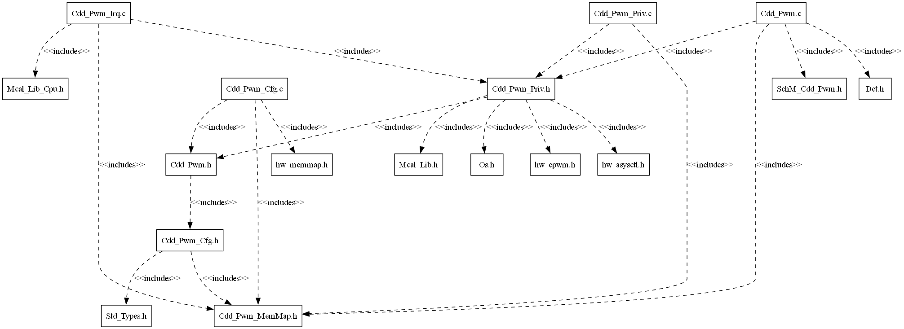

4.13. CDD PWM Module
4.13.1. Acronyms and Definitions
Abbreviation/Term |
Explanation |
|---|---|
AUTOSAR |
Automotive Open System Architecture |
CDD |
Complex Device Driver |
MCAL |
Micro Controller Abstraction Layer |
API |
Application Programming Interface |
DET |
Default Error Tracer |
HW |
Hardware |
SW |
Software |
LA |
Logic Analyzer |
EPWM |
Enhanced Pulse Width Modulation |
PWM Instance |
Single EPWM hardware unit |
Channel |
Each PWM instance supports two output channels EPWMxA and EPWMxB. Each output is considered as a channel |
PWM Output State |
Defines the output state for a PWM signal. It could be: High or Low |
PWM Idle State |
The idle state represents the output state of the PWM channel after the call of Cdd_Pwm_SetOutputToIdle or Cdd_Pwm_DeInit |
PWM Polarity |
Defines the starting output state of each PWM channel |
PWM Duty cycle |
Defines a percentage of the polarity(level) related to the period for each PWM channel |
PWM period |
Defines the value corresponds to the period of the PWM instance (This value is written into the TBPRD register). This is parameter is only applicable to the EPWM instance (not applicable to channel) |
TBPRD |
Time-Base Period - Period value that is written into the register |
SYSCLK |
System clock |
EPWMCLK |
Clock to the EPWM module |
EPWMCLKDIV |
EPWM clock divider. This divides the SYSCLK and produces EPWMCLK to the EPWM instances |
CLKDIV |
Clock divider prescaler which divides the EPWMCLK that is fed to the EPWM instance |
HSCLKDIV |
High speed clock divider, it is multiplied with CLKDIV and divides the EPWMCLK that is fed to the EPWM instance |
T_TBCLK |
Time period of the time-base clock. This is calculated based on the clock to the EPWM module and the configured clock prescalers. |
F_TBCLK |
Frequency of the time-base clock.(1/T_TBCLK) |
T_PWM |
Time Period of the generated PWM waveform |
F_PWM |
Frequency of the time-base clock.(1/T_PWM) |
GPIO |
General Purpose Input Output |
Edge |
Change in the output level from HIGH to LOW or LOW to HIGH |
4.13.2. Introduction
CDD PWM driver is a Complex Device Driver used to represent an analog signal with a digital approximation. It provides services to change the duty cycle and period of the PWM/EPWM channels. It provides service to set the PWM channels in the IDLE state. Furthermore, it provides services to enable and disable notification mechanism and routines to count the edges detected.

Fig. 4.53 Cdd Pwm MCAL AUTOSAR
This document details AUTOSAR Cdd Pwm module implementation
Supported AUTOSAR Release |
4.3.1 |
|---|---|
Supported Configuration Variants |
Pre-Compile |
Vendor ID |
CDD_PWM_VENDOR_ID (44) |
Module ID |
CDD_PWM_MODULE_ID (255) |
4.13.3. Functional Overview
EPWM (Enhanced Pulse width modulation)/PWM is a general method for representing an analog signal with a digital approximation. A PWM signal consists of a sequence of variable width, constant amplitude pulses which contain the same total energy as the original analog signal. This property is valuable in digital motor control as sinusoidal current (energy) can be delivered to the motor using PWM signals applied to a power converter.
Each EPWM/PWM instance supports 2 channels: Channel A & Channel B. Period and notification configuration is common for both the channels of the PWM instance. Duty cycle can be configured independently.
Note
The overview only covers what is implemented in the driver.
4.13.3.1. How the dutycycle is configured in the hardware
As per the current implementation each EPWM has 3 sub-modules that determines the output of the PWM channel, the sub-modules are:
4.13.3.1.1. Time Base counter
This sub-module primarily consists of a 16-bit counter which partially determines the period & frequency of the PWM waveform.
The mode of the time-base counter decides the symmetry of the waveform. For Asymmetric waveform the counter runs in Up-Count Mode and runs in Up-Down-Count Mode for symmetric waveforms.
Up-count Mode: The counter starts counting from zero and increments until it reaches the time-base period register value, then the counter resets to zero and the count sequence starts again.
Up-Down-Count Mode: The counter starts counting from zero and increments until it reaches the time-base period register value, then the counter decrements until it reaches zero and the count sequence repeats.
Clocking: The clock used for the EPWM counter is originally sourced from a device’s system clock. A configurable clock divider divides down the system clock to generate the EPWM clock (EPWMCLK). EPWM clock pre-scaler values can then be used to further divide down the EPWM clock for the EPWM counter and a EPWM time-base period register. The counter and the time-base period value control the frequency and period of the generated EPWM waveforms.
Time-Base Clock TBCLK = EPWMCLK / (HSPCLKDIV * CLKDIV) \
Clock Pre-scaler = HSPCLKDIV * CLKDIV
TBPRD = Period value from the configurator/with Cdd_Pwm_Period API
DutyCycle = DutyCycle value from the configurator/with Cdd_Pwm_SetDutyCycle API
Note
Shadow registers act like a buffer to allow register updates to be synchronized with the EPWM counter or a specific (configurable) event and avoid corruption or spurious operation from the register being modified asynchronously by software.
4.13.3.1.2. Counter Compare
When a match occurs (counter = CMPA / CMPB), this is known as a compare event. Compare events are used by the EPWM action-qualifier submodule to influence EPWM outputs.
An integral compare value is calculated based on the configured duty cycle of the channel and period of the instance. The output level can be decided based on the Action qualifier events. In scenarios where the calculated value is same for different configured duty cycles the output is going to be exactly same. Note that for up-count modes, a counter-compare match (counter = CMPx) can occur only once per cycle which produces a Asymmetric waveform; however, for up-down-count mode, a counter match can occur twice per cycle since there can be a match on the up-count and another match on the down-count which generates a Symmetric output waveform.
4.13.3.1.3. Action qualifier(AQ)
The action-qualifier submodule is responsible for constructing the shape of PWM waveforms. This submodule utilizes compare events from the time-base and counter-compare submodules to performing actions on an EPWM modules two output channels (EPWMxA and EPWMxB). These first three submodules (time-base, counter-compare, and action-qualifier) are the key submodules needed to generate a basic PWM waveform. Based on the configuration these are the actions supported for each event:
Set PWM output high
Clear PWM output low
Toggle PWM output (if high, toggle low; if low, toggle high)
Do nothing to PWM output
Based on the symmetry and the polarity of the instance, compare value and AQ actions are set for each channel as per the desired duty cycle by the driver.
Note
Other sub-modules are not currently supported by the driver. We will add support in later releases.
4.13.3.2. EPWM Waveform
Two different waveform types are supported for each PWM instance:
4.13.3.2.1. Asymmetric scenario
The time-base counter runs in Up-Count mode and a period ends when the counter value equals to the zero again. In this mode one of the edges will occur at counter equals to Zero event and the other edge occurs when the counter equals to the configured compare value.
For polarity HIGH: The falling edge occurs when counter is equal to the CMP value and the rising edge occurs when the counter is equal to Zero. For polarity LOW: The falling edge occurs when counter is equal to zero and the rising edge occurs when the counter is equal to the CMP value.
The calculated Compare Value(CMP) based on the Period of the EPWM/PWM instance and the configured duty cycle is
Time-Base Period (TBPRD) = (Tpwm / TTBCLK) - 1
CMP(compare value) = (DutyCycle*(TBPRD +1)) / (0x8000)
Where,
Tpwm = Switching Period
TTBCLK = Timer Period
4.13.3.2.2. Symmetric scenario
The counter runs in Up-Down-Count mode which affects the period of the generated PWM waveform. For the same configured period the frequency of the Symmetric waveform will be half of the frequency of the Asymmetric waveform.
In this mode one of the edges will occur at counter equals to compare value event during up-mode and the other edge occurs when the counter equals to the compare value event during down-mode.
For polarity HIGH: The falling edge occurs when counter is equal to the CMP value and the rising edge occurs when the counter is equal to Zero. For polarity LOW: The falling edge occurs when counter is equal to zero and the rising edge occurs when the counter is equal to the CMP value.
The calculated Compare Value (CMP) based on the Period of the EPWM/PWM instance and the configured duty cycle is
Time-Base Period (TBPRD) = (Tpwm / (2 * TTBCLK))
CMP(compare value) = (DutyCycle*TBPRD) / (0x8000)
Where,
Tpwm = Switching Period
TTBCLK = Timer Period

Fig. 4.54 Cdd Pwm module architecture
Note
All duty cycle values may not be valid for a particular configured period. The duty cycle is calculated based on the compare value which is an integer. Period configured in EB tresos or set by calling Cdd_Pwm_SetPeriod() is written directly into the TBPRD register.
In case of asymmetric waveform, the notification at the counter = Zero event is common for both the channels of the PWM instance. The notification count in such scenarios will be only one instead of two.
For example: For asymmetric waveform, if the notification is enabled on both edges for both the channels then the notification count when both the channels have HIGH polarity is (1 for falling of Channel A + 1 for falling of Channel B + 1 for rising edge of both Channels A & B)
This happens because counter=Zero event is common for both the channels and both the outputs have the rising edge at that particular event.
This scenario is not applicable to the Symmetric waveform because both the edges occur at counter=CMP and different events are supported for each output channel.
Cdd_Pwm_EnableNotification & Cdd_Pwm_DisableNotification APIs enable and disable the EPWM interrupt respectively.
4.13.4. Hardware Features
4.13.4.1. Hardware Features supported
Features Supported at a high level are:
Dedicated 16-bit time-base counter with period and frequency control.
Two PWM outputs (EPWMxA and EPWMxB) that can be used in the following configurations -
Two independent PWM outputs with single-edge operation.
Two independent PWM outputs with dual-edge symmetric operation.
One independent PWM output with dual-edge asymmetric operation.
Asynchronous override control of PWM signals through software.
Programmable phase-control support for lag or lead operation relative to other EPWM modules.
Hardware-locked (synchronized) phase relationship on a cycle-by-cycle basis.
All events can trigger CPU interrupts
Programmable event prescaling minimizes CPU overhead on interrupts.
4.13.4.2. Not supported Features
Programmable phase-control support for lag or lead operation relative to other ePWM modules.
Hardware-locked (synchronized) phase relationship on a cycle-by-cycle basis.
Dead-band generation with independent rising and falling edge delay control.
Programmable trip zone allocation of both cycle-by-cycle trip and one-shot trip on fault conditions.
A trip condition can force either high, low, or high-impedance state logic levels at PWM outputs.
All events can trigger both CPU interrupts and ADC start of conversion (SOC)
Programmable event prescaling minimizes CPU overhead on interrupts.
PWM chopping by high-frequency carrier signal, useful for pulse transformer gate drives.
4.13.4.3. Non compliance
Cdd_Pwm_GetOutputState : This API is not supported.
Cdd_Pwm_SetOutputToIdle : API is supported but with deviations.
Note
Cdd_Pwm_SetOutputToIdle doesn’t set the PWM output to IDLE state immediately. The API operates in shadow mode so the IDLE state will be effective from CTR=Zero event. All the supported APIs work in shadow mode which means any update in the period, dutycycle, action qualifier actions and IDLE output will happen when the counter is equal to zero.
4.13.5. Source files
📦f29h85x_mcal
┣ 📂build
┣ 📂docs
┣ 📂drivers
┃ ┣ 📂BSW_Stubs
┃ ┣ 📂Can
┃ ┣ 📂Cdd_Adc
┃ ┣ 📂Cdd_Ecap
┃ ┣ 📂Cdd_Ipc
┃ ┣ 📂Cdd_Pwm
┃ ┃ ┣ 📂include
┃ ┃ ┃ ┣ 📜Cdd_Pwm.h : Contains the API declarations of the Cdd_Pwm driver to be used by upper layers.
┃ ┃ ┃ ┣ 📜Cdd_Pwm_Priv.h : Declaration of the private APIs.
┃ ┃ ┣ 📂src
┃ ┃ ┃ ┣ 📜Cdd_Pwm.c : Implementation of the Cdd_Pwm public APIs.
┃ ┃ ┃ ┣ 📜Cdd_Pwm_Irq.c : Implementation for Cdd_Pwm interrupts handlers.
┃ ┃ ┃ ┗ 📜Cdd_Pwm_Priv.c : Implementation of the private APIs
┃ ┃ ┗ 📜CMakeLists.txt
┃ ┣ 📂Cdd_Sent
┃ ┣ 📂Cdd_Uart
┃ ┣ 📂Cdd_Xbar
┃ ┣ 📂Dio
┃ ┣ 📂Gpt
┃ ┣ 📂hw_include
┃ ┣ 📂Lin
┃ ┣ 📂Mcal_Lib
┃ ┣ 📂Mcu
┃ ┣ 📂Port
┃ ┣ 📂Spi
┃ ┗ 📂Wdg
┣ 📂examples
┣ 📂plugins
┣ 📜CMakeLists.txt
┗ 📜CMakePresets.json

Fig. 4.55 Cdd Pwm Header File Structure
4.13.6. Module requirements
4.13.6.1. Memory Mapping
Will be added in later release
4.13.6.2. Scheduling
None
4.13.6.3. Error handling
4.13.6.3.1. Development Error Reporting
Development errors are reported to the DET using the service Det_ReportError(), when enabled. The driver interface contains the MACRO declaration of the error codes to be returned.
4.13.6.4. Error codes
Type of Error |
Related Error code |
Value (Hex) |
|---|---|---|
API called when the driver is not initialized |
CDD_PWM_E_UNINIT |
0x0AU |
Init API called when the driver is already initialized |
CDD_PWM_E_ALREADY_INITIALIZED |
0x0BU |
Init API called with invalid pointer |
CDD_PWM_E_PARAM_POINTER |
0x0CU |
API called with invalid ID(parameter) |
CDD_PWM_E_INVALID_ID |
0x0DU |
API called for the PWM instance whose has no notification pointer available |
CDD_PWM_E_NOTIF_CAPABILITY |
0x0EU |
API called for the PWM instance whose channel class is not variable period |
CDD_PWM_E_CHANNEL_CLASS |
0x0FU |
API called when the channel configured for the notification is invalid |
CDD_PWM_E_INVALID_CHANNEL_NOTIFICATION |
0x11U |
API called when the edge notification type is not valid |
CDD_PWM_E_INVALID_NOTIFICATION |
0x12U |
API called when the event count is invalid/out-of-range |
CDD_PWM_E_INVALID_EVENT_COUNT |
0x13U |
API called with invalid/out-of-range duty cycle value |
CDD_PWM_E_INVALID_DUTY_CYCLE |
0x18U |
4.13.6.4.1. Runtime Errors
Type of Error |
Related Error code |
Value (Hex) |
|---|---|---|
API called whose notification is already enabled or invalid channel notification is called for the instance |
CDD_PWM_E_NOTIF_ALREADY_ENABLED |
0x10U |
4.13.7. Used resources
4.13.7.1. Interrupt Handling
Cdd_Pwm driver provides ISRs. The ISRs are implemented in the Cdd_Pwm_Irq.c file. Interrupt and the category should be selected in the Cdd_Pwm plugin.The Interrupt ID associated with the PWM instance is mentioned in the TRM (also, please refer the Example application).
Cdd_Pwm Instance |
Interrupt handler |
|---|---|
EPWM1 |
Cdd_Pwm_Epwm1_IntIsr |
EPWM2 |
Cdd_Pwm_Epwm2_IntIsr |
EPWM3 |
Cdd_Pwm_Epwm3_IntIsr |
EPWM4 |
Cdd_Pwm_Epwm4_IntIsr |
EPWM5 |
Cdd_Pwm_Epwm5_IntIsr |
EPWM6 |
Cdd_Pwm_Epwm6_IntIsr |
EPWM7 |
Cdd_Pwm_Epwm7_IntIsr |
EPWM8 |
Cdd_Pwm_Epwm8_IntIsr |
EPWM9 |
Cdd_Pwm_Epwm9_IntIsr |
EPWM10 |
Cdd_Pwm_Epwm10_IntIsr |
EPWM11 |
Cdd_Pwm_Epwm11_IntIsr |
EPWM12 |
Cdd_Pwm_Epwm12_IntIsr |
EPWM13 |
Cdd_Pwm_Epwm13_IntIsr |
EPWM14 |
Cdd_Pwm_Epwm14_IntIsr |
EPWM15 |
Cdd_Pwm_Epwm15_IntIsr |
EPWM16 |
Cdd_Pwm_Epwm16_IntIsr |
EPWM17 |
Cdd_Pwm_Epwm17_IntIsr |
EPWM18 |
Cdd_Pwm_Epwm18_IntIsr |
Note
Same Interrupt Category needs to be configured in both Cdd_Pwm and OS Module. Both the channels under a EPWM/PWM instance share the same interrupt.
4.13.7.2. Instance support
CPU instances |
supported |
|---|---|
CPU 1 |
YES |
CPU 2 |
NO |
CPU 3 |
NO |
4.13.7.3. Hardware-Software Mapping
Below image shows Cdd_Pwm driver Hardware-Software mapping. For more information related to HW/SW mapping, refer the F29x Reference Manual.

Fig. 4.56 Cdd_Pwm HW/SW Mapping
4.13.8. Integration description
4.13.8.1. Dependent modules
4.13.8.1.1. DET
This driver depends on the DET in order to report development and runtime errors. The detection of development errors is configurable ON/OFF. The switch CDD_PWM_DEV_ERROR_DETECT will activate or deactivate the detection of development errors. Runtime errors are reported even when CDD_PWM_DEV_ERROR_DETECT is OFF.
4.13.8.1.2. MCU
MCU Module is required for the PWM clock initialization.
4.13.8.1.3. OS
The Cdd_Pwm driver uses interrupts and therefore there is a dependency on the OS, which configures the interrupt sources.
4.13.8.1.4. PORT
The Port module configures the port pins used for the PWM driver in the EPWM mode. Hence, the Port driver has to be initialized prior to use PWM functions and to generate proper PWM output. Otherwise unpredictable output might be generated.
4.13.8.1.5. SchM
If multiple AUTOSAR runnables have access to the same Data Store Memory block, the exported AUTOSAR specification enforces data consistency by using an AUTOSAR exclusive area. With this specification, the runnables have mutually exclusive access to the per-instance memory global data, which prevents data corruption. Beside the OS, the BSW Scheduler provides functions that CDD PWM module calls at begin and end of critical sections. This implementation requires 1 level of exclusive access to guard critical sections.
The data consistency mechanism that has to be applied to an ExclusiveArea might be domain, ECU or even project specific. The decision which mechanism has to be applied by RTE / Basic Software Scheduler is taken during ECU integration by setting the Exclusive Area configuration parameter RteExclusiveAreaImplMechanism. This parameter is an input for RTE generator.
For CDD_PWM Module, data consistency and exclusive access to critical sections are required for the following sections as shown in the table below:
Exclusive Area Functions used |
CDD_PWM Function calling Exclusive Area |
Need for Exclusive Area |
Recommended Exclusive Area Mapping |
|---|---|---|---|
CDD_PWM_EXCLUSIVE_AREA_0 |
Cdd_Pwm_SetDutyCycle |
To protect against multiple access for shared resources |
ALL_INTERRUPT_BLOCKING : All interrupts should be blocked as this API’s can be called in the interrupts. |
4.13.8.2. Multi-core and Resource allocator
Not Supported
4.13.9. Configuration
The Cdd_Pwm Driver implementation supports one configuration variant Pre-Compile config. The driver expects generated Cdd_Pwm_Cfg.h to be present as input file. The associated Cdd_Pwm driver configuration generated source files are Cdd_Pwm_Cfg.c
The generated configuration files should not be modified manually. The config tool Elektrobit Tresos should be used to modify the configuration files.
4.13.9.1. CddPwmConfigSet
This container contains the configuration parameters and sub containers of the AUTOSAR Pwm instance.
4.13.9.1.1. CddPwmHwUnitConfig
Configuration of an individual PWM instance.
4.13.9.1.1.1. CddPwmInstanceId
Item |
|
|---|---|
Name |
CddPwmInstanceId |
Description |
Pwm hardware instance. |
Origin |
Texas Instruments |
Post-Build-Variant-Value |
false |
Value-Configuration-Class |
– |
Pre-Compile-Time |
VARIANT-PRE-COMPILE |
Default-value |
1 |
Max-value |
1 |
Min-value |
1 |
4.13.9.1.1.2. CddPwmOutputClass
Item |
|
|---|---|
Name |
CddPwmOutputClass |
Description |
Class of PWM Channel. |
Origin |
Texas Instruments |
Post-Build-Variant-Value |
false |
Value-Configuration-Class |
– |
Pre-Compile-Time |
VARIANT-PRE-COMPILE |
Default-value |
CDD_PWM_VARIABLE_PERIOD |
Range |
CDD_PWM_FIXED_PERIOD |
4.13.9.1.1.3. CddPwmClockDivider
Item |
|
|---|---|
Name |
CddPwmClockDivider |
Description |
Time base clock pre-scale value. |
Origin |
Texas Instruments |
Post-Build-Variant-Value |
false |
Value-Configuration-Class |
– |
Pre-Compile-Time |
VARIANT-PRE-COMPILE |
Default-value |
CDD_PWM_CLK_DIVIDER_1 |
4.13.9.1.1.4. CddPwmHighSpeedClockDivider
Item |
|
|---|---|
Name |
CddPwmHighSpeedClockDivider |
Description |
High speed clock divider for the PWM instance. |
Origin |
Texas Instruments |
Post-Build-Variant-Value |
false |
Value-Configuration-Class |
– |
Pre-Compile-Time |
VARIANT-PRE-COMPILE |
Default-value |
CDD_PWM_HSCLK_DIVIDER_1 |
4.13.9.1.1.5. CddPwmFrequency
Item |
|
|---|---|
Name |
CddPwmFrequency |
Description |
This parameter defines the frequency of the PWM instance. |
Origin |
Texas Instruments |
Post-Build-Variant-Value |
false |
Value-Configuration-Class |
– |
Pre-Compile-Time |
VARIANT-PRE-COMPILE |
Default-value |
1.0E8 |
4.13.9.1.1.6. CddPwmPeriod
Item |
|
|---|---|
Name |
CddPwmPeriod |
Description |
Value of period used for Initialization. This value will be written into the TBPRD register |
Origin |
Texas Instruments |
Post-Build-Variant-Value |
false |
Value-Configuration-Class |
– |
Pre-Compile-Time |
VARIANT-PRE-COMPILE |
Default-value |
0 |
Max-value |
65535 |
Min-value |
0 |
4.13.9.1.1.7. CddPwmInterruptEnable
Item |
|
|---|---|
Name |
CddPwmInterruptEnable |
Description |
Enables/disables the interrupt for the PWM instance. |
Origin |
Texas Instruments |
Post-Build-Variant-Value |
false |
Value-Configuration-Class |
– |
Pre-Compile-Time |
VARIANT-PRE-COMPILE |
Default-value |
false |
4.13.9.1.1.8. CddPwmInterruptCategory
Item |
|
|---|---|
Name |
CddPwmInterruptCategory |
Description |
This parameters defines the category of the interrupt. |
Origin |
Texas Instruments |
Post-Build-Variant-Value |
false |
Value-Configuration-Class |
– |
Pre-Compile-Time |
VARIANT-PRE-COMPILE |
Default-value |
ISR_CAT1_RTINT |
Range |
ISR_CAT1_INT |
4.13.9.1.1.9. CddPwmSymmetry
Item |
|
|---|---|
Name |
CddPwmSymmetry |
Description |
This parameter defines the symmetry of the generated waveform. |
Origin |
Texas Instruments |
Post-Build-Variant-Value |
false |
Value-Configuration-Class |
– |
Pre-Compile-Time |
VARIANT-PRE-COMPILE |
Default-value |
CDD_PWM_ASYMMETRIC_WAVEFORM |
Range |
CDD_PWM_ASYMMETRIC_WAVEFORM |
4.13.9.1.1.10. CddPwmNotification
Item |
|
|---|---|
Name |
CddPwmNotification |
Description |
Definition of the Callback function. |
Multiplicity-Configuration-Class |
– |
Pre-Compile Time |
VARIANT-PRE-COMPILE |
Origin |
Texas Instruments |
Post-build-variant-multiplicity |
false |
Post-Build-Variant-Value |
false |
Value-Configuration-Class |
– |
Pre-Compile-Time |
VARIANT-PRE-COMPILE |
Default-value |
NULL_PTR |
4.13.9.1.1.11. CddPwmMcuClockReferencePoint
Item |
|
|---|---|
Name |
CddPwmMcuClockReferencePoint |
Description |
This parameter contains reference to the McuClockReferencePoint |
Origin |
Texas Instruments |
Post-Build-Variant-Value |
false |
Value-Configuration-Class |
– |
Pre-Compile-Time |
VARIANT-PRE-COMPILE |
4.13.9.1.2. CddPwmOutputChannel
Configuration of output channel A.
4.13.9.1.2.1. CddPwmChannel
Item |
|
|---|---|
Name |
CddPwmChannel |
Description |
Defines the output channel for the PWM instance. |
Origin |
Texas Instruments |
Post-Build-Variant-Value |
false |
Value-Configuration-Class |
– |
Pre-Compile-Time |
VARIANT-PRE-COMPILE |
Default-value |
CDD_PWM_OUTPUT_A |
Range |
CDD_PWM_OUTPUT_A |
4.13.9.1.2.2. CddPwmPolarity
Item |
|
|---|---|
Name |
CddPwmPolarity |
Description |
Defines the starting polarity of the PWM channel. |
Origin |
Texas Instruments |
Post-Build-Variant-Value |
false |
Value-Configuration-Class |
– |
Pre-Compile-Time |
VARIANT-PRE-COMPILE |
Default-value |
CDD_PWM_LOW |
Range |
CDD_PWM_HIGH |
4.13.9.1.2.3. CddPwmIdleState
Item |
|
|---|---|
Name |
CddPwmIdleState |
Description |
The parameter PWM_IDLE_STATE represents the output state of the channel after the signal is stopped (e.g.call of Pwm_SetOutputToIdle). |
Origin |
Texas Instruments |
Post-Build-Variant-Value |
false |
Value-Configuration-Class |
– |
Pre-Compile-Time |
VARIANT-PRE-COMPILE |
Default-value |
CDD_PWM_LOW |
Range |
CDD_PWM_HIGH |
4.13.9.1.2.4. CddPwmDutyCycle
Item |
|
|---|---|
Name |
CddPwmDutyCycle |
Description |
Value of duty cycle used for Initialization |
Origin |
Texas Instruments |
Post-Build-Variant-Value |
false |
Value-Configuration-Class |
– |
Pre-Compile-Time |
VARIANT-PRE-COMPILE |
Default-value |
16384 |
Max-value |
32768 |
Min-value |
0 |
4.13.9.1.2.5. CddPwmDutyCycleInPercentage
Item |
|
|---|---|
Name |
CddPwmDutyCycleInPercentage |
Description |
This parameter defines the configured duty cycle in percentage. |
Origin |
Texas Instruments |
Post-Build-Variant-Value |
false |
Value-Configuration-Class |
– |
Pre-Compile-Time |
VARIANT-PRE-COMPILE |
Default-value |
50.0 |
4.13.9.2. CddPwmGeneral
General configuration (parameters) of the PWM Driver software module.
4.13.9.2.1. CddPwmDevErrorDetect
Item |
|
|---|---|
Name |
CddPwmDevErrorDetect |
Description |
Switches the development error detection on or off. |
Origin |
Texas Instruments |
Post-Build-Variant-Value |
false |
Value-Configuration-Class |
– |
Pre-Compile-Time |
VARIANT-PRE-COMPILE |
Default-value |
false |
4.13.9.2.2. CddPwmDeInitApi
Item |
|
|---|---|
Name |
CddPwmDeInitApi |
Description |
Adds / removes the service Cdd_Pwm_DeInit() from the code. |
Origin |
Texas Instruments |
Post-Build-Variant-Value |
false |
Value-Configuration-Class |
– |
Pre-Compile-Time |
VARIANT-PRE-COMPILE |
Default-value |
true |
4.13.9.2.3. CddPwmSetDutyCycle
Item |
|
|---|---|
Name |
CddPwmSetDutyCycle |
Description |
Adds / removes the service Cdd_Pwm_SetDutyCycle() from the code. |
Origin |
Texas Instruments |
Post-Build-Variant-Value |
false |
Value-Configuration-Class |
– |
Pre-Compile-Time |
VARIANT-PRE-COMPILE |
Default-value |
true |
4.13.9.2.4. CddPwmSetOutputToIdle
Item |
|
|---|---|
Name |
CddPwmSetOutputToIdle |
Description |
Adds / removes the service Cdd_Pwm_SetOutputToIdle() from the code. |
Origin |
Texas Instruments |
Post-Build-Variant-Value |
false |
Value-Configuration-Class |
– |
Pre-Compile-Time |
VARIANT-PRE-COMPILE |
Default-value |
true |
4.13.9.2.5. CddPwmSetPeriod
Item |
|
|---|---|
Name |
CddPwmSetPeriod |
Description |
Adds / removes the service Cdd_Pwm_SetPeriod() from the code. |
Origin |
Texas Instruments |
Post-Build-Variant-Value |
false |
Value-Configuration-Class |
– |
Pre-Compile-Time |
VARIANT-PRE-COMPILE |
Default-value |
true |
4.13.9.2.6. CddPwmVersionInfoApi
Item |
|
|---|---|
Name |
CddPwmVersionInfoApi |
Description |
Switch to indicate that the Pwm_ GetVersionInfo is supported |
Origin |
Texas Instruments |
Post-Build-Variant-Value |
false |
Value-Configuration-Class |
– |
Pre-Compile-Time |
VARIANT-PRE-COMPILE |
Default-value |
false |
4.13.9.3. Steps To Configure Cdd_Pwm Module
Open EB Tresos configurator tool, load Cdd_Pwm module. Only Precompile Config Variant is supported.
Configure the required parameters.
By default the EPWMCLKDIV is set to 2 (this divides the SYSCLK by 2), to modify the value ASPath:/TI_F29H85x/Mcu/McuModuleConfiguration/McuClockSettingConfig/McuClkConfig/McuEpwmClkDiv parameter in the Mcu plugin should be modified.
Run the unattended wizard with calculated values enabled to show the updated calculated values.
Save the module and click on generate to generate the configuration files.
Click on generate_SWC-T to generate the BSWMD arxml file
4.13.10. Examples
The example application demonstrates use of Cdd_Pwm module, the list below identifies key steps performed in the example.
4.13.10.1. Cdd_Pwm_Example_UpCountMode
4.13.10.1.1. Overview Of Cdd_Pwm_Example_UpCountMode
Cdd_Pwm_Example_UpCountMode
EcuM_Init()
Initializes clock to 100 MHz using Mcu_Init().
Initializes the pins for EPWM using Port_Init().
Initializes the Pwm configurations according to the configurations selected in the configurator with Cdd_Pwm_Init.
Cdd_Pwm_SetOutputToIdle will set the PWM output in the IDLE state for the specified channel.
Cdd_Pwm_EnableNotification will enable the notification for the specified PWM instance.
Cdd_Pwm_SetDutyCycle will reactivate the Pwm output for the specified channel.
McalLib_Delay allows delay in the Application/program
Cdd_Pwm_SetPeriod will change the period of the specified Pwm instance.
Cdd_Pwm_DeInit will de-initialize the driver and reset the Pwm registers. The output of the channels will be in the configured IDLE state.
4.13.10.1.2. Setup required to run Cdd_Pwm_Example_UpCountMode example
Install Code Composer Studio(CCS) latest version
Install latest C29 compiler
Connect the pins configured for EPWM as per the example description to the LA to observe generated waveform.
Power the board and run the example
Open serial console to observe print statements of the example
4.13.10.1.3. How to run Cdd_Pwm_Example_UpCountMode example
Open CCS and import Cdd_Pwm_standard Example
Build project and start debug project
4.13.10.1.4. Sample Log of Cdd_Pwm_Example_UpCountMode example
Executing Cdd_Pwm_Example_UpCountMode example
The duty cycles of the EPWM1 & EPWM2 channels have been modified
All the EPWM1 & EPWM2 channels in IDLE state
The notification count for EPWM1 instance after calling Cdd_Pwm_SetDutyCycle API is 50
The notification count for EPWM2 instance after calling Cdd_Pwm_SetDutyCycle API is 2013
The frequency of EPWM1 has been doubled(period halved)
The duty cycles of the EPWM2 channels have been modified
Time elapsed in US(microsecond) from when the notification is enabled until Deinit is 3236216
Number of rising edges detected for EPWM1 are 151
Number of edges detected for EPWM2 are 4035
Cdd_Pwm_Example_UpCountMode executed successfully
4.13.10.2. File Structure
📦f29h85x_mcal
┣ 📂build
┣ 📂docs
┣ 📂drivers
┣ 📂examples
┃ ┣ 📂AppUtils
┃ ┣ 📂Can
┃ ┣ 📂Cdd_Adc
┃ ┣ 📂Cdd_Ecap
┃ ┣ 📂Cdd_Ipc
┃ ┣ 📂Cdd_Pwm
┃ ┃ ┣ 📂Cdd_Pwm_Example_UpCountMode
┃ ┃ ┃ ┣ 📂CCS
┃ ┃ ┃ ┃ ┗ 📜Cdd_Pwm_Example_UpCountMode.projectspec
┃ ┃ ┃ ┣ Cdd_Pwm_Example_UpCountMode_Config
┃ ┃ ┃ ┃ ┣ 📂config
┃ ┃ ┃ ┃ ┃ ┣ 📜Cdd_Pwm.xdm : Generated EB Tresos config file in .xdm format
┃ ┃ ┃ ┃ ┃ ┣ 📜Dem.xdm
┃ ┃ ┃ ┃ ┃ ┣ 📜EcuM.xdm
┃ ┃ ┃ ┃ ┃ ┣ 📜Mcu.xdm
┃ ┃ ┃ ┃ ┃ ┣ 📜Os.xdm
┃ ┃ ┃ ┃ ┃ ┗ 📜Port.xdm
┃ ┃ ┃ ┃ ┣ 📂include
┃ ┃ ┃ ┃ ┃ ┣ 📜Cdd_Pwm_Cfg.h : Contains the generated pre-compiler build variant configuration header file
┃ ┃ ┃ ┃ ┃ ┣ 📜Dem_Cfg.h
┃ ┃ ┃ ┃ ┃ ┣ 📜EcuM_Cfg.h
┃ ┃ ┃ ┃ ┃ ┣ 📜Mcu_Cfg.h
┃ ┃ ┃ ┃ ┃ ┣ 📜Os_Cfg.h
┃ ┃ ┃ ┃ ┃ ┗ 📜Port_Cfg.h
┃ ┃ ┃ ┃ ┣ 📂src
┃ ┃ ┃ ┃ ┃ ┣ 📜Cdd_Pwm_Cfg.c : Contains the Pre-compile build variant configuration parameters.
┃ ┃ ┃ ┃ ┃ ┣ 📜Dem_Cfg.c
┃ ┃ ┃ ┃ ┃ ┣ 📜EcuM_Cfg.c
┃ ┃ ┃ ┃ ┃ ┣ 📜Mcu_PBcfg.c
┃ ┃ ┃ ┃ ┃ ┣ 📜Os_Cfg.c
┃ ┃ ┃ ┃ ┃ ┗ 📜Port_PBcfg.c
┃ ┃ ┃ ┃ ┗ 📜CMakeLists.txt
┃ ┃ ┃ ┣ 📜Cdd_Pwm_Example_UpCountMode.c : Example application for Cdd_Pwm.
┃ ┃ ┃ ┗ 📜CMakeLists.txt
┃ ┣ 📂Cdd_Sent
┃ ┣ 📂Cdd_Uart
┃ ┣ 📂Cdd_Xbar
┃ ┣ 📂DeviceSupport
┃ ┣ 📂Dio
┃ ┣ 📂Gpt
┃ ┣ 📂Lin
┃ ┣ 📂Mcu
┃ ┣ 📂Port
┃ ┣ 📂Spi
┃ ┣ 📂Wdg
┣ 📂plugins
┣ 📜CMakeLists.txt
┗ 📜CMakePresets.json